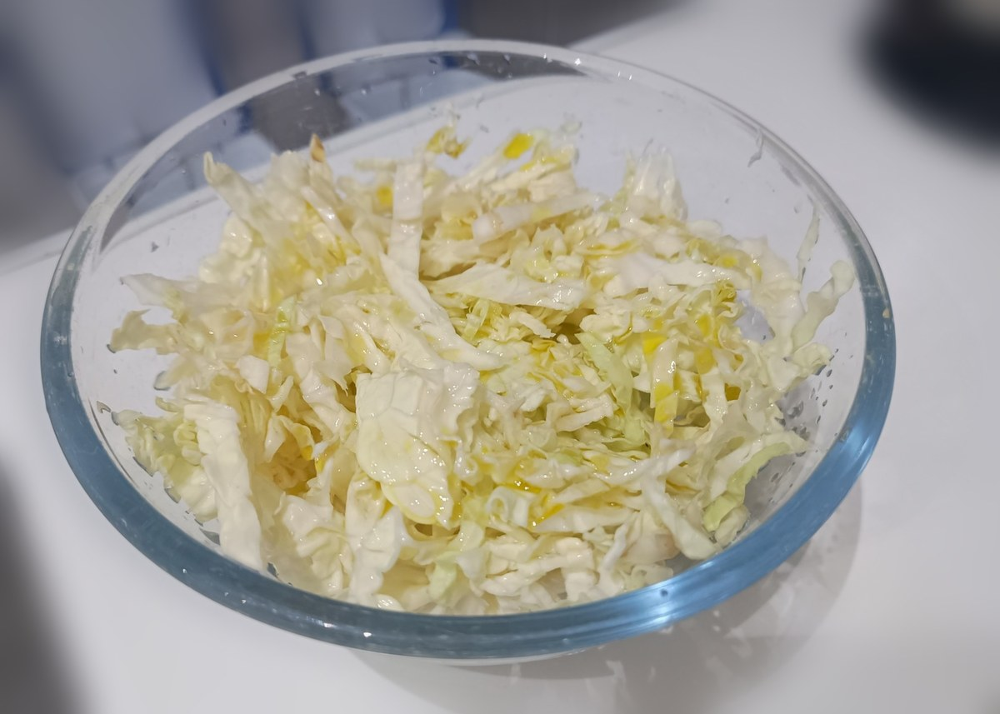

Ensalada simple de col
87 kcal/ración2 g proteína1 cuch. aceite1 raciónguarnicion, comida, cenasodio bajo
Receta propia de Ricardo.

Ingredientes (1 ración/es)
- 175 g de col
- 1 cucharilla de aceite de oliva virgen extra
- 2 cucharillas de vinagre de jerez o de sidra
- 1 pizca de sal
- 100 ml de agua
Pasos
El modo voz usa el reconocimiento de voz del navegador. En Chrome, el audio se envía a los servidores de Google para transcribirlo; en otros navegadores puede procesarse en el propio dispositivo. Si prefieres no usar el micrófono, los botones de abajo funcionan igual.
- Cortar la col en juliana fina y dejarla en remojo con agua durante 5-10 minutos.
- Preparar el aliño mezclando el aceite, el vinagre, la sal y el agua.
- Escurrir bien la col, pasarla a un bol y aliñar con la vinagreta.